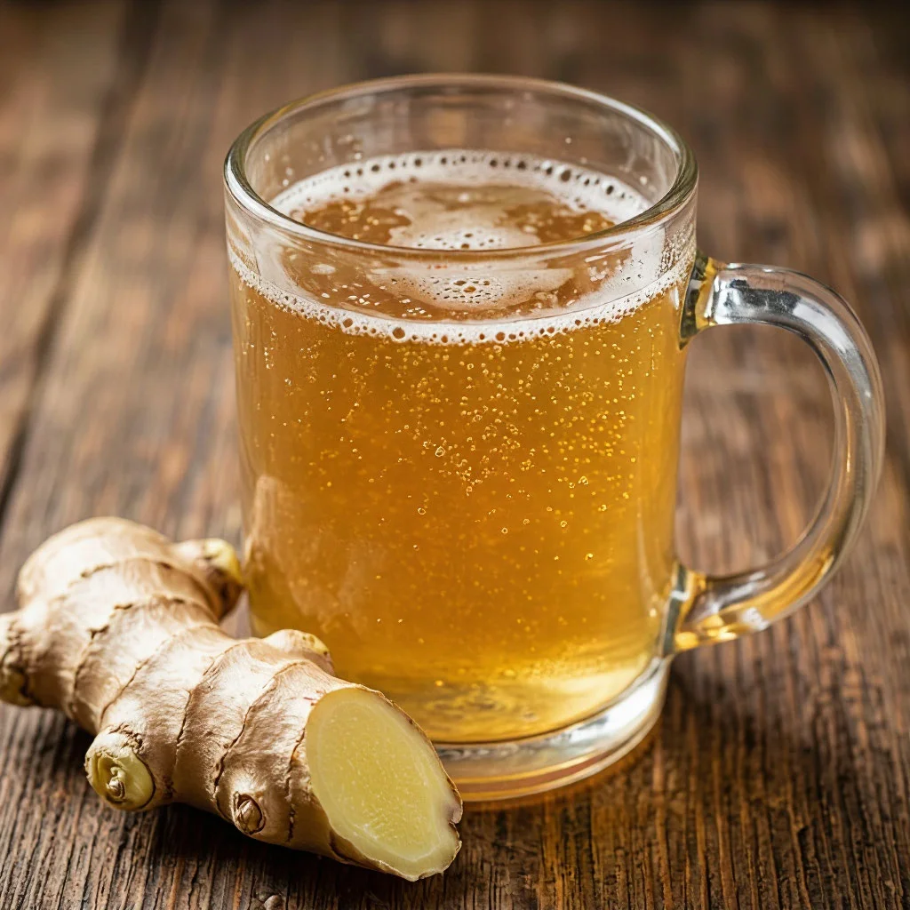

ДАЙДЖЕСТ / BODREEVSHOW
Имбирное пиво

Имбирное пиво: пряный рецепт без алкоголя и с алкоголем
Если вы уже собирали тонкие травяные профили в гозе , балансировали фруктовую кислотность с солодовой базой или искали ту самую «сладкую горчинку» в элях, имбирное пиво станет для вас ещё одной классной площадкой для экспериментов. Тут тоже всё про баланс: жгучесть имбиря, цитрусовая свежесть, сладость и карбонизация. А ещё тут два разных мира — безалкогольный освежающий напиток и ферментированный вариант с лёгкой алкогольной ноткой.
В чём разница между «имбирным пивом» и «имбирным элем»
Коротко: исторически имбирное пиво — это продукт натурального брожения (с дрожжами/закваской), а имбирный эль чаще делают без брожения, просто смешивая сироп с газированной водой. В домашнем пивоварении под «имбирным пивом» обычно понимают именно ферментированную версию. Если же вы делаете без брожения — это скорее пряный лимонад/эль по стилю, но тоже классный.
Что даёт имбирь и как управлять жгучестью
Корень имбиря содержит гингерол (жгучесть) и шогаол (ещё более жгучая молекула, появляется при сушке/нагреве). Поэтому свежий имбирь даёт «сочную остроту», а сушёный — более сухую и стойкую.
Как управлять жгучестью:
Форма сырья. Натёртый свежий имбирь отдаёт больше аромата и умеренную остроту. Кусочки дают более ровный профиль. Сушёный порошок легко «перебрать», его лучше дозировать по граммам.
Температура. При длительном нагреве жгучесть смягчается, но часть аромата уходит. Для яркого аромата лучше короткое кипячение или настой.
Сахар. Сахар не «убивает» остроту, но смягчает восприятие. Кислота (лимон/лайм) подчёркивает свежесть и делает жгучесть более «точечной».
Безалкогольное имбирное пиво (быстрый и чистый вариант)
Это не брожение, а пряный газированный лимонад с характером. Отлично заходит в жару, его можно масштабировать от 1 литра до большой партии для стрима.
Ингредиенты на 3 литра готового напитка
Свежий имбирь — 60–80 г (очищенный и натёртый).
Лимон — 2 шт. (сок + цедра с 1 лимона).
Сахар — 150–200 г (можно заменить сиропом агавы/мёдом, но тогда сладость будет другой по характеру).
Вода — 2,5 л.
Газированная вода — 0,5 л (для финального объёма и карбонизации).
По желанию: мята (5–6 листиков) или щепотка молотой корицы для глубины.
Пошагово
Имбирный сироп. В сотейник положите натёртый имбирь, сахар, цедру и сок лимонов. Добавьте 500 мл воды, доведите до кипения и проварите на слабом огне 10–15 минут. Это уберёт резкость и соберёт аромат.
Охлаждение и фильтрация. Снимите с огня, дайте постоять 15–20 минут, затем процедите через сито/марлю. У вас получится концентрированный пряный сироп.
Сборка. Смешайте сироп с 2 литрами холодной воды и льдом (или просто охладите в холодильнике). Перед подачей добавьте газированную воду.
Подача. Разлейте по стаканам со льдом, украсьте долькой лимона и листиком мяты.
Нюансы для вашего «пивного» взгляда. Если вы привыкли работать с затором и фильтрацией, тут логика похожая: вы контролируете экстракцию (время/температура) и затем фильтруете твёрдые частицы. А газированная вода выполняет роль «сухого охмеления» по эффекту: она собирает профиль и даёт свежесть.
Алкогольное имбирное пиво (ферментированное, 5–7% ABV)
Здесь мы идём по пути натурального брожения. Можно использовать либо чистую дрожжевую культуру, либо имбирный стартер (Ginger Beer Plant / GBP), но для первого раза проще и стабильнее — дрожжи + сахар + имбирь.
Ингредиенты на 5 литров готового пива
Свежий имбирь — 100–120 г (очищенный, нарезанный кусочками 3–5 мм).
Лимон — 3 шт. (только сок; цедру можно добавить совсем немного, 1 ч. л., чтобы не было горечи от белой мякоти).
Сахар — 700–800 г (тростниковый сахар даёт более «карамельный» профиль, белый — чище).
Дрожжи — элевые нейтральные (US‑05) или сидровые (для более сухого финиша).
Вода — 5 л.
Опционально: винный камень 1 ч. л. (стабилизирует кислотность и помогает карбонизации).
Ключевые параметры
Начальная плотность: 1.060–1.070 (это даст 5–7% алкоголя при хорошей аттенюации).
Конечная плотность: 1.008–1.012 (сухой/полусухой финиш).
Температура брожения: 20–22 °C (чище профиль, меньше эфиров).
Карбонизация: 2,6–2,8 объёма CO₂ (высокая, как в гозе).
Пошаговая схема
Шаг 1. Имбирный экстракт. Нарежьте имбирь, залейте 1 литром воды, добавьте сок лимонов и 200 г сахара. Доведите до кипения, проварите 10 минут на слабом огне, снимите с огня и дайте остыть до 30–35 °C. Это будет ароматная база.
Шаг 2. Сусло. В бродильную ёмкость перелейте 4 литра воды, добавьте оставшиеся 500–600 г сахара и остывший имбирный экстракт. Хорошо размешайте до полного растворения сахара. Проверьте плотность ареометром.
Шаг 3. Внесение дрожжей. Когда температура сусла 20–24 °C, внесите дрожжи. Закройте гидрозатвором.
Шаг 4. Брожение. Оставьте при 20–22 °C на 5–7 дней. Проверяйте плотность: как только она стабилизируется на уровне 1.008–1.012, брожение завершено.
Шаг 5. Розлив и карбонизация. Снимите с осадка, разлейте по бутылкам с праймером (сахар из расчёта 6–7 г/л для высокой карбонизации) или используйте кег. Если делаете в бутылках, дайте 7–10 дней при комнатной температуре для карбонизации, затем уберите в прохладу.
Шаг 6. Выдержка. Дайте напитку отдохнуть 3–5 дней в холоде — так осядут дрожжи и стабилизируется профиль.
Имбирный стартер (GBP) — если хочется «аутентики»
Ginger Beer Plant (GBP) — это симбиоз дрожжей и бактерий (похоже на чайный гриб, но с другим профилем). Он даёт сливочно-пряный характер и более ровную карбонизацию.
Как завести. На 1 л воды возьмите 2 ст. л. сахара, 20–30 г свежего имбиря (кусочками) и 1 ч. л. винного камня. Всё смешайте в банке, накройте тканью. Через 2–3 дня появятся пузырьки. Каждые 2–3 дня «кормите» смесью сахара и имбиря. Через 7–10 дней стартер готов.
Использование. На 5 л напитка возьмите 1 стакан стартера, 500 г сахара, сок 3 лимонов, 80–100 г имбиря. Смешайте, накройте тканью, оставьте на 2–3 дня при 22–24 °C до нужной карбонизации, затем разлейте и охладите.
Минус GBP — он требует постоянного «кормления», плюс — уникальный профиль. Если вы уже ухаживали за дрожжевыми культурами или делали кислое пиво, логика та же: чистота, температура, стабильный режим.
Важные нюансы и частые ошибки
Горькая цедра. Белая мякоть лимона/лайма даёт неприятную горечь. Снимайте только жёлтую цедру мелкой тёркой.
Слишком жгучий профиль. Если имбирь «бьёт в нос», значит, вы либо взяли много порошка, либо долго кипятили свежий. Для баланса добавьте чуть больше цитруса или уменьшите дозу имбиря в следующей партии.
Слабая карбонизация. Проверьте дозировку праймера и герметичность бутылок. Высокая карбонизация критически важна: она «подсвечивает» имбирную свежесть так же, как в гозе работает соль.
Мутность. Это нормально: в имбирном пиве остаются частицы корня и дрожжи. Если хотите прозрачнее — дайте постоять в холоде 3–4 дня и аккуратно снимите с осадка.
Варианты для экспериментов (в духе ваших прошлых опытов)
Имбирно‑малиновый. 300–400 г малинового пюре на 5 л на вторичное брожение. Лёгкая кислотность малины дружит с имбирём, а сладость можно снизить. Это похоже на то, как вы собирали малиново‑ананасовый эль: баланс фруктовой кислоты и пряной опоры.
Имбирно‑хмелевой. Добавьте 15–20 г хмеля Citra или Mosaic на сухое охмеление (в ферментер на 2–3 дня). Тропические ноты хмеля отлично контрастируют с имбирём.
Имбирно‑травяной. Чабрец (5–7 г) или лемонграсс (10–15 г) на вторичное. Это перекликается с вашим опытом травяных элей: травы собирают профиль и дают «чистоту» аромата.
Солёно‑имбирный. 3–4 г нейодированной соли на 5 л на вторичное. Лёгкая минеральность подчёркивает жгучесть и цитрус — прямой мост к теме гозе.
Мини тест, чтобы найти свой баланс
Сделайте 4 бутылки по 0,75 л на базе нейтрального сахарного сусла (плотность 1.050):
Контроль (без добавок).
Имбирь 15 г/0,75 л + лимон.
Имбирь 25 г/0,75 л + лимон (более жгучий).
Имбирь 20 г + малина 60 г/0,75 л.
Внесите добавки в мешочках, дайте 2–3 дня на вторичное, снимите с добавок, охладите и сравните. Так вы поймёте, какой уровень жгучести и кислотности вам ближе.
Как связать с вашими прошлыми экспериментами
Если вам нравилось выводить шоколадно ‑ кофейные ноты в стаутах, здесь вы тоже работаете с «опорными» вкусами: имбирь — это ваша «горечь/аромат», лимон — «кислотность», сахар — «тело». Если вы делали гозе , то высокая карбонизация и поиск баланса «соль/кислота/пряность» вам уже знакомы — в имбирном пиве вместо соли опорной нотой становится жгучесть. А если вы собирали фруктовые эли , логика фруктовых добавок та же: на вторичное, контролируемо, с оглядкой на кислотность.